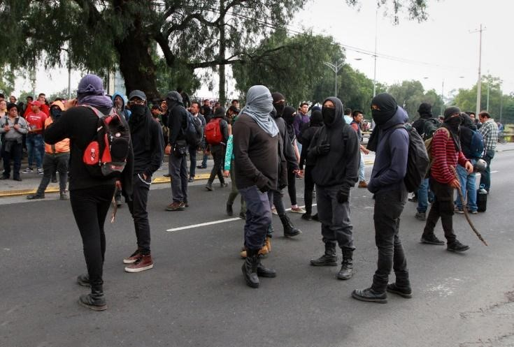

CetSolutions
Este tema siempre ha sido lo mismo durante años esta situación ha causado muchos daños para los alumnos quieres no están involucrados con los pleitos de otras escuelas y corremos un peligro de que salgamos lastimados también los porros del mismo cetís van a atacar a otras escuelas estos videos son pocos de los demás casos y esto representa el peligro y hace pocos días exigieron el regreso de los uniformes para según ver quienes pertenecen a la escuela y quienes son de otra escuela y esto al principio fue una buena idea pero después de escuchar un caso recientemente de que un grupo de 3 chicos y 1 chica fueran atacados afuera del plantel por porros de otra y los alumnos salieran hospitalizados y sin saber nada de la chica y esto paso porque los reconocieron de que escuela eran por el uniforme de la escuela y a maestros y a comerciantes que salieron lastimados o que sus negocios fueran destruidos
¿Qué es un porro en la escuela?
En México es denominado porro al integrante de una organización que persigue distintos intereses particulares, ya sean estos políticos o económicos, basados en la violencia organizada, en el asilarse en instituciones estudiantiles y en el fungir como grupo de choque mercenario. Sabotean o rompen huelgas estudiantiles.

Conducta social
Los grupos porriles se amparan en la protección o fomento de determinadas administraciones estudiantiles que desean cotos de poder o mantener el control de un bloque de escuelas. Se constituyen de adolescentes generalmente maltratados o de padres violentos —incluso ex porros— y de familias marginadas y desintegradas, con violencia intrafamiliar y por lo general inseguros, que son convencidos de integrarse a estas organizaciones por la facilitación de drogas, alcohol, fiestas y el ejercicio de un poder local delincuente y, en algunos casos, de notas académicas altas. Estos son persuadidos de ingresar a los grupos mediante una bienvenida (golpiza) y la asignación de un apodo hacen que el «porro iniciado» le guste más el movimiento, las golpizas hacia otra escuela se forman parte del carácter y conducta del porro. Las petardizas y las campales son lo más común en un grupo porril.

considerando este fenómeno social como un simple conflicto entre pandillas y, en un intento de desinformar, ocupando el término «porro» para referirse de igual manera a los delincuentes represores, como a los activistas sociales afectados. La realidad indica que estos grupos mantienen el control interno de la mayor parte de las escuelas públicas en la Ciudad de México, delinquiendo sin problema y obteniendo con facilidad dinero del estudiantado. Al día de hoy, ninguna autoridad de ningún nivel ha realizado una acción concreta para terminar este problema. Hasta la fecha solamente la UNAM y las demás instituciones ha realizado expulsiones de algunos líderes de este tipo de organizaciones, aunque no se han tomado medidas contra las autoridades que les brindaban protección.
Una solución que varios propusieron fueran de que quitaran el uniforme y que solo re entraría al plantel con la tarjeta del alumno de la escuela o solo traer la camisa sin el pantalón y la camisa.
Impedir el comercio de los puestos de afuera Este tema es el que están las molestos todos los alumnos porque al principio del numero semestre pusieron unas láminas a través de toda la escuela evitando que veamos fuera del plantel o que compremos alimentos de los comerciantes que hacen sus ventas hay mismo. Es muy molesto esto porque todos los chicos quienes no traen lonch compran sus alimentos en estos puestos ya que en la cafetería que ofrece la propia escuela el precio de sus alimentos son exagerados y aparte la comida hecha hay a veces te lo dan caducado o que no está bien cocinado y haciendo que alumnos se enfermen. Una solución a este problema es de que bajen los precios se los productos y que las personas quienes trabajan hay tengan por lo menos una experiencia en la cocina. Y luchamos para poder comer algo sin tener que gastar mucho dinero.